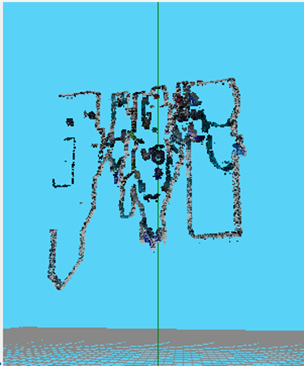
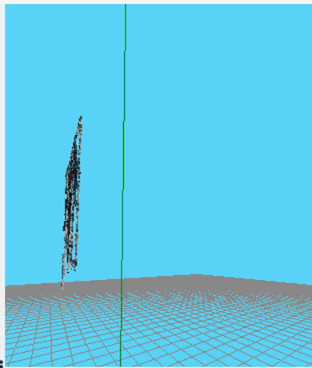

Entry 3: Triangulation & 3D Point Visualization
🔼 Triangulation & 3D Point Visualization
Everything is now ready to compute the 3D position of the previously matched points.
For this, I use the HAL.backproject() function to convert the 2D coordinates into backprojection rays from each camera.
Then, I take the midpoint between the two rays to estimate the actual position of the point in 3D space.
Afterward, the resulting 3D point is transformed into the 3D viewer's coordinate system using HAL.project3DScene().
To assign each point its real color, I compute the average color of the corresponding pixels in both images.
This helps reduce minor camera differences and results in a more natural visualization.
I concatenate the 3D point with its color values [r, g, b] to form a 6-element list, and use
GUI.ShowNewPoints() to display the colored point in the viewer.
During this step, I encountered an error when visualizing the points in the 3D viewer. Specifically,
GUI.ShowNewPoints() threw a ValueError with the message
"the truth value of an array with more than one element is ambiguous".
This issue was caused by passing NumPy arrays directly instead of converting them to lists.
Once I forced both the 3D point coordinates and their color to be lists, the first triangulated points displayed successfully:
🧠 Testing Triangulation with More Points
When testing the triangulation on a larger set of points, the 3D viewer began to show a partial reconstruction of the scene. However, two clear issues became immediately visible:
- The image appears inverted: 
- No depth is present: The z value is always the same. 
🚧 Correct 3D Point Triangulation
By printing the output from my triangulation function, I confirmed that something was going wrong.
As shown in the previous image, the z coordinate was always 1. Something was clearly broken.
In the initial implementation, the 3D point was estimated by averaging the outputs from HAL.backproject()
from both cameras. This approach ignored the actual position of the cameras and assumed both rays originated from the same point,
which is incorrect.
Additionally, HAL.backproject() returns a 3D point that lies along a ray, but doesn’t define the entire ray path.
Without knowing the ray’s origin (the camera position), proper triangulation isn't possible.
To solve this, I changed my strategy, making use of the available functions and applying stereo ray geometry.
First, I obtained the actual position of each camera using HAL.getCameraPosition(), which gives the ray's origin.
Then, I transformed each image point into optical coordinates using HAL.graphicToOptical().
Next, I applied HAL.backproject() to the optical point to get a 3D point in the ray's direction.
I then computed the direction vector by subtracting the camera position from this point —
thus defining the full ray (origin + direction).
With the two rays defined, I solved for their intersection by computing the closest points on each line and averaging them if they don’t intersect exactly. With this new method, the resulting points now show proper depth.